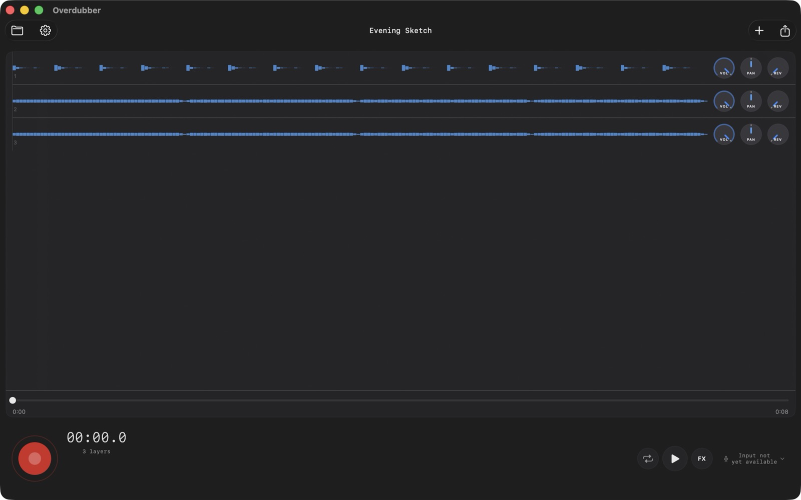
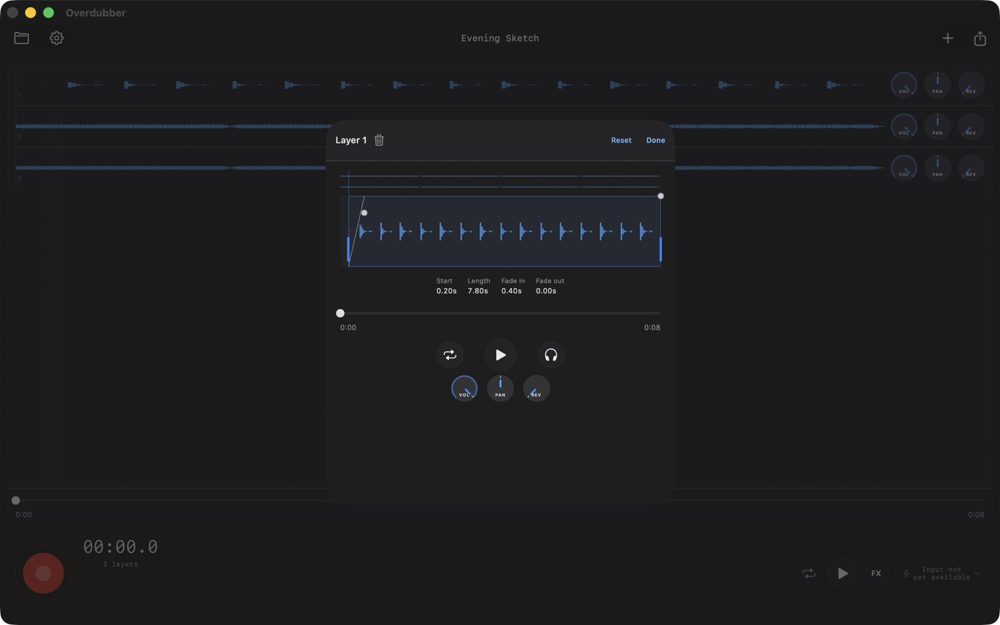
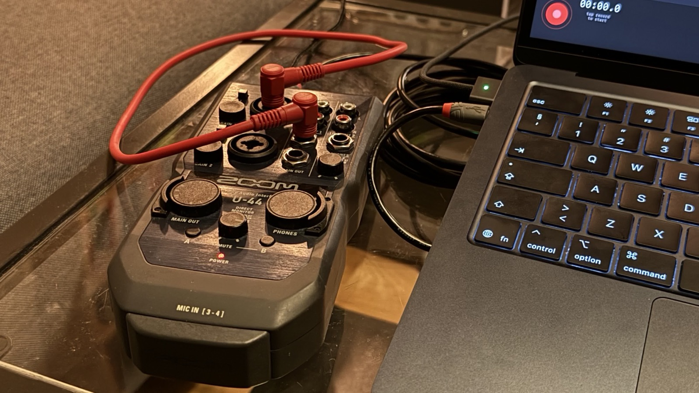

Music & making apps
Bringing Overdubber to Mac: Catalyst, a faulty cable, and rethinking iPad
Overdubber is now on Mac. It is a looper and multitrack audio recorder for building up vocals, guitar, beatboxing or other recorded parts, one layer at a time. The same idea started on iPhone and iPad: record something, listen back while adding the next part, then mix and export.
Bringing it to the desktop meant working with Mac Catalyst, revisiting the layout, and spending quite a bit of time with a Zoom U-44 audio interface. One of the most useful fixes turned out to be a USB cable.


Why bring an iPhone recorder to Mac?
I wrote about the app’s beginnings in From tape machines to Overdubber: a university prototype, time spent making music, and two reel-to-reel machines. The Mac version follows the same idea. Sometimes the phone is the recorder you have with you. Sometimes you are already sitting at a computer with headphones and an audio interface connected.
For a singer, that might mean recording a melody and stacking harmonies. For a guitarist, it might mean laying down a rhythm part, looping it, and trying another part over it. Overdubber keeps that recording workflow small. It does not have MIDI sequencing, virtual instruments or plug-in hosting. If those are what you need, a full digital audio workstation is a better fit.
What Catalyst gave me
Mac Catalyst let me bring the existing app to macOS while keeping the shared recording, project, mixing and editing code. That matters for a small app: a correction to the underlying workflow can benefit more than one platform, instead of becoming a second implementation to maintain.
Getting a window to compile was only the beginning. Saving a file should feel at home on a Mac. Sharing needs to hand another application a usable audio file. A sheet needs to close when you press Done. Those sound like small details until one of them gets between you and the recording you just made.
The Mac work included native Save As, keyboard commands, and fixes around export sharing and presentation. One sharing issue needed more than a filename or a nicer preview: the receiving app needed its own stable copy of the exported file. Testing the handoff meant checking the file the other app actually received.


The faulty cable
Audio problems are particularly good at looking like software problems when you are in the middle of porting an audio app.
During the Mac work, I heard distortion through the Zoom U-44. It also happened in YouTube and QuickTime, on two Macs, including after a restart. Playback on the iPhone was clean. Replacing the USB cable restored clean listening on the Mac.
That changed how we interpreted the earlier results. A suspicious recording is not enough evidence to rewrite an audio engine when the connection itself is unreliable.


The patch cable lets the interface record its own output. Play a known sequence of pulses, record it back, and compare where the pulses land. That gives you something more specific than “this take feels late”: an offset at the start, spacing between pulses, and whether the recording drifts.
After restoring a working connection, one short repeat produced three 16-second takes with all 48 expected pulses present and exact one-second spacing. That was useful evidence, not a promise about every interface or every recording length. The follow-up setup also changed power and patch cabling, so those measurements do not isolate USB cable length as the cause.
There were real software timing problems to solve as well. Later work aligned the recorded take with the playback timeline using capture timestamps. Physical tests covered ordinary overdubs, count-in, and monitoring at both 44.1 and 48 kHz on the U-44. The lesson was to separate a bad connection from a reproducible engine problem, and keep checking the actual recorded audio.
The Mac work made me rethink iPad
A larger screen changes the layout question. Simply spreading phone controls across a wide window does not necessarily make recording easier.
We developed two arrangements: tracks above a bottom transport, and tracks alongside a compact column of controls. The second arrangement can work on Mac and landscape iPad, while portrait iPad keeps the controls below the tracks to preserve waveform width. Both use a shared seek bar and aligned playheads.
This is still a distinction between design work and public rollout. Mac uses the bottom-control layout by default. The alternative layouts are available for development preview, and the public iPad layout experiment is not enabled as I write this. I want to evaluate Mac and iPad separately; a layout that works with a pointer on a desk may not be the one you want while holding a tablet.
What the first Mac version does—and where it stops
Overdubber for Mac requires macOS 14 or later. It records from the input selected in macOS System Settings, whether that is the built-in microphone or a compatible audio interface. Explicit device selection inside the app is deferred. The U-44 tests describe one tested setup, not universal audio-interface certification.
The free app records up to eight layers per project and exports a finished WAV or M4A mix. The one-time Full Unlock adds unlimited layers, audio import, individual-track export as WAV files in a ZIP, and more themes. Full Unlock is shared across iPhone, iPad and Mac with the same Apple Account; use Restore Purchases if you have already bought it. There is no subscription or account requirement, and the Mac version has no ads.
New Session video capture remains an iPhone and iPad feature. Mac can review and export existing saved Sessions, but it does not make new Session captures in this first release. ZIP stems import is also deferred on Mac; exporting stems and importing a stems ZIP are different features.
The iOS app remains part of the same project, especially for recording away from a desk and making Session videos of the layers coming together. An Android version is in closed testing; it is not publicly released yet.
Try recording a few layers
If you want to sketch a song or stack vocal harmonies on Mac without opening a full production session, start with headphones and one short part. Record another while listening back, balance the layers, and export the mix. That is the workflow Overdubber is built around.
You can get Overdubber on the Mac App Store, or read the feature overview for iPhone, iPad and Mac. And if the audio suddenly sounds wrong in every app, check the cable too.